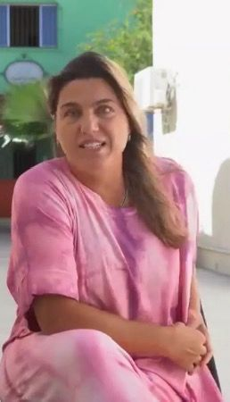
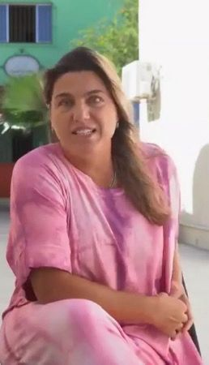
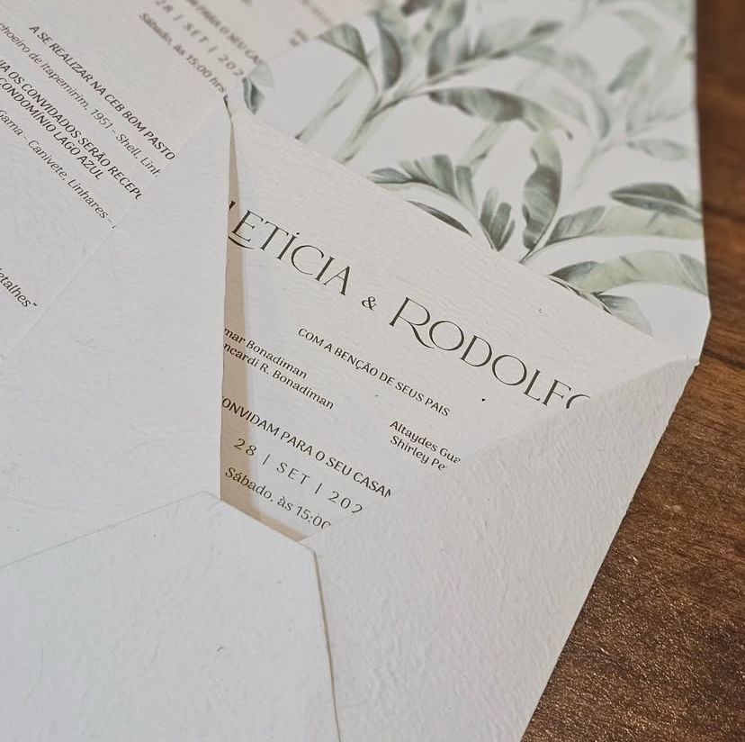
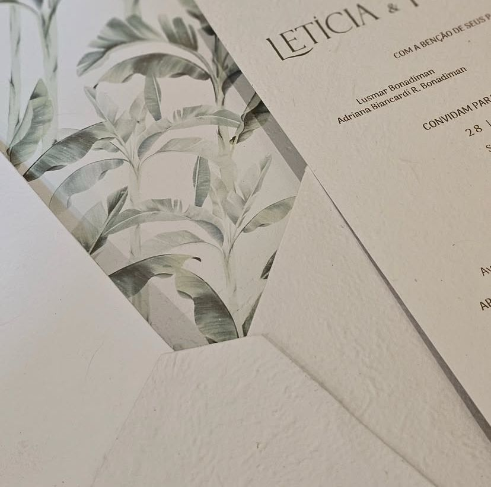
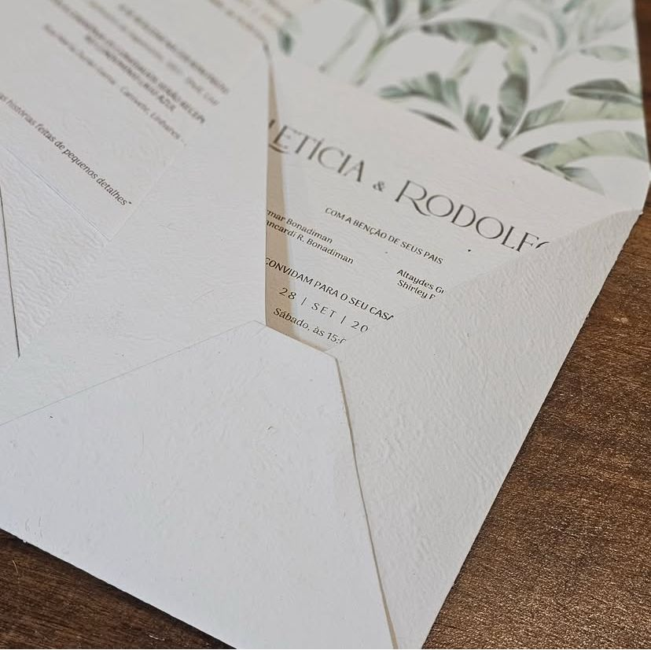

Papel Recriado
papelaria sustentável
papelaria sustentável
 

Olá! Me chamo Emanuelle Righetti!
Somos uma empresa sustentável, produzimos papéis reciclados
e de fibras naturais.
Criamos e recriamos!
Preservamos um importante pedaço da Mata Atlântica
na região do Caparaó Capixaba.
Conheça e faça parte da nossa corrente verde!
É usado na confecção do nosso papel sustentável e biodegradável,
o tronco da bananeira, que é descartado assim que os cachos das bananas são colhidos
e folhas de taboa, que são aqueles matos que dá em regiões alagadas.
Escolhemos estas plantas pelo fato do ciclo renovável, após o corte, ou poda, elas rebrotam!
O processo: Material colhido, lavado, picado, cozido, triturado e por fim,
formamos folhas em tanque próprio, e depois é colocado para secar.

Feitos com papel reciclado artesanal, construído junto com a cliente.
  
Álbum de fotos personalizado de acordo
com cada cliente,
feito com papel reciclado artesanal.
Tags semente, produzida com papel reciclado
e sementes variadas.
"Os depoimentos são comentários
breves de pessoas que amam a sua marca.
É uma maneira excelente de convencer
os clientes a experimentar seus serviços."
"Os depoimentos são comentários
breves de pessoas que amam a sua marca.
É uma maneira excelente de convencer
os clientes a experimentar seus serviços."
Telefone: (27) 998167029
Endereço: Rua Cel. Mascarenhas, 102 - Centro de Vila Velha - ES